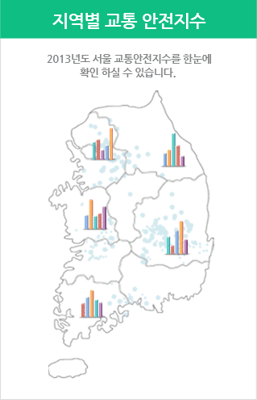
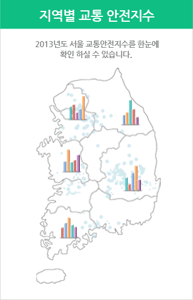

- 사용하는 지도는 무엇을 찾기 위한 지도일까요? 자세히 알아봅시다.2015.07.25
- 지금 보여주는 자료의 어떠한 기준년도 언제일까요2015.07.25
- 조회된 통계값 중 N/A란 우리가 교통사고가 일어나는 비중의 조회된 통계값 중 N/A란 우리가 교통사고가 일어나는 비중의2015.07.25
- 조회결과에 나오는 1,2,3순위란 교통법규에 지정된 것처럼 2015.07.25
- 사용하는 지도는 무엇을 찾기 위한 지도일까요? 자세히 알아봅시다.2015.07.25
- 지금 보여주는 자료의 어떠한 기준년도 언제일까요2015.07.25
스쿨존내 어린이 교통사고
‘14년 기준
- 대전
- 제주
- 광주
- 경북
- 경남
- 3,800 3,4000
- 30,800 3,4000
- 3,800 3,800
- 30,800 5,000
- 5,000 1,000
0
5,000
10,000
사고건수
사망사고율
- 사고(건)
600,000 건
- 부상(명)
450,000 명
- 사망(명)
766건